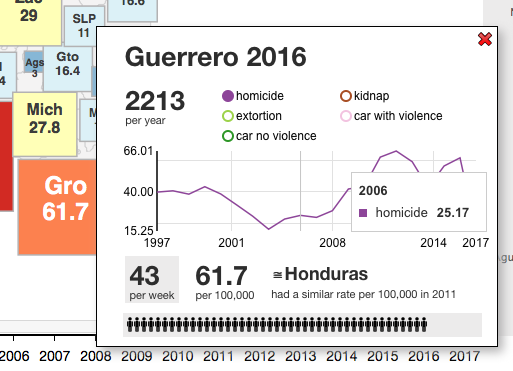
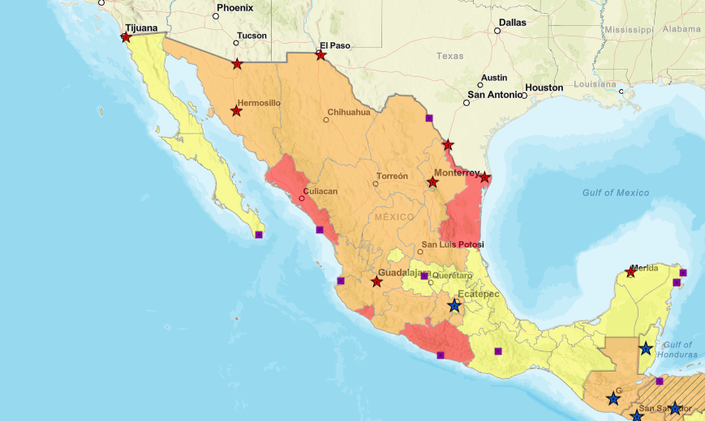

Crime in Mexico is a data visualization project that analyzes regional crime rates in Mexico.
Link to Crime in Mexico Visualization
Link to Crime in Mexico Visualization

The main audience for Crime in Mexico are people who are interested in crime statistics, which include governments, visitors to Mexico, and policy makers.
The author does a good job of citing his data sources. In particular, his source of data for crime rates is the Mexican government, and he provides a link to the location where his data sources can be found. He also makes his code available on GitHub so that viewers can see the CSV files and code that produced his project.
Unfortunately, it is well-known that crime in Mexico is severely under-reported. So, even though his data sources come from what would seem to be an authoritative source, one has to know that it doesn't necessarily show the whole truth.
Despite the limitations of data when creating projects about Mexico, the visualization makes the most of the data that it has. Besides the color coding at the state level, you are also able to focus on one state and view the yearly trends for that state.
The visualization does a great job at conveying the extent to which the problem of violence in Mexico is a regional issue. It is very clear in the visualization that some regions experience violence to a much greater degree, and this is conveyed with color-coding and the sizes of the square regions that represent the different states in Mexico. The regional violence in Mexico is corroborated by the CIA's travel warnings to Mexico, which specifically designate Colima, Guerrero, Michoacan, Sinaloa, and Tamaulipas as do not travel states. Other states, like Yucatan, where Cancun is located, are relatively peaceful.

Another one of my favorite things about this data visualization is the animation features that displays the different crime rates across Mexico from 1997 to 2016.
This is a great feature because it shows when violence in Mexico dramatically increased, which was right after 2007 when the then President of Mexico declared war on the
drug cartels that previously operated without interference form the federal government. Watching the visualization chronologically, one immediately asks, what happened
before 2008? Why was there a sudden spike in crime that still hasn't returned to it's previous levels?
One of my main criticisms of the project is that the scale isn't consistent. It seems that the author chose natural cut-off points in the data, but didn't specify how he arrived at those cut-offs. Another one of my criticisms is that the home page immediately loads the data for 2017, but that data is incomplete. Additionally, the data for the kidnapping crime rates seems very low, and could have been improved. Futhermore, the visualization does not resize for smartphones, so one has to know that they can only view the visualization on a laptop or large-scale display.